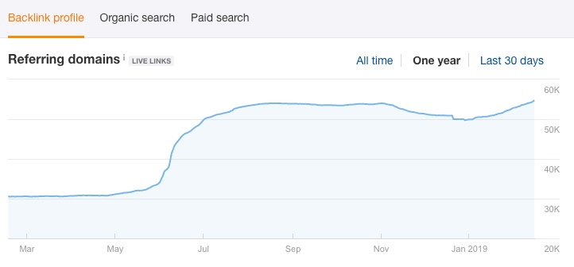
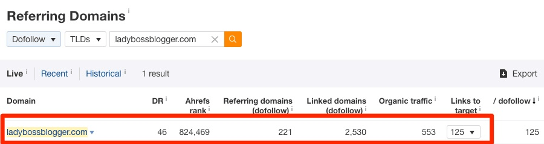

如何围绕 SEO 开展竞争对手分析 [包含分析模板]¶
如果你打算建立全新的电商独立站，或者已经厌倦了在自然搜索中不断地输给竞争对手，那么你就有必要基于搜索引擎优化开展一次竞争对手分析了。
竞争对手的数据对你来说简直就是一座金矿，它们可以从各个方面对你的 SEO策略提供指导，帮助提升你站点的自然流量。
具体来说，开展基于 SEO的竞争对手分析可以帮助你：
- 了解所在行业的运作规则；
- 找到竞争对手的弱点，并加以利用；
- 找到竞争对手的强项，并加以复制；
- 理解需要开展的 SEO相关工作，并分出优先级；
- 了解在搜索引擎结果页面（Search Engine Result Page, SERP）超越竞争对手的难度。
在本文中，我们虚构了一款信息图表设计工具（infographic design tool）—— Minimagraphic.com，并将以此为例，介绍一套基于 SEO 开展竞争对手分析的标准流程。

我们还为大家准备了一个用于竞争对手分析的表格模板，相信在为自己的网站做竞争对手分析的时候，它能派上用场。
现在开始¶
围绕 SEO 开展竞争对手分析，你需要以下两件兵器： 1. Ahrefs SEO 工具集 2. Google 表格（Google Sheets）模板（重要：拷贝后再使用！）
为了防止以下的说明有不清楚的地方（希望不会出现这种情况），有必要将针对我们假想站点的完成版表格也一起拷贝了。
完成了的（竞争对手分析）表格在此。
准备好了吗？我们开始！
1. 识别竞争对手¶
在开展各项工作之前，需要确认我们的主要竞争对手。
它们是自然搜索中之于目标关键词与我们争夺排名的网站。
就我们假想的信息图表设计工具而言，立刻浮现在脑海的竞争对手有：Canva，Piktochart，Infogram，easel.ly 和 Visme。然而，我们在自然搜索板块的竞争者可能并不直接构成业务竞争。
我们先来看看潜在用户搜索相关服务时可能会使用的短语。
我们起初觉得会是“infographic design tool“之类的词，但是当我们在 Ahrefs 的 关键词分析（Keywords Explorer）工具中检索的时候，发现这个猜想好像错了，该短语在 Google 中并没有搜索量。

打开共同排名短语（Also rank for）报告， 我们来看看是否能找到更好的关键词。
看起来人们在搜索这类工具时，用的最多的词是“infographic maker”。
现在让我们切换到 SERP 概览（SERP overview） 报告，看看这个关键词排名前 5 的结果。
如果你还不是 Ahrefs 的用户，可以试试在 Google 中搜索这个关键词：

看起来我们最主要的 5 个 竞争对手是：Piktochart，Venngage，Canva，Visme 和 Infogram。
有趣的是，Easel.ly 并不够格（成为我们的竞争对手），因为在排名前 10 的结果中没有发现它的身影。
就这是为什么我们不能依赖直觉确认直接的同业竞争对手。再重申一遍，从 SEO 角度，他们并不总是你的竞争对手。
举一个更生动的例子，假设你在一座小镇中经营一家肉店。路边另外一家肉店可能让你寝食难安。然而就 SEO 而言，他们并不构成任何威胁，因为他们甚至连网站都没有。
我们将这 5 个竞争对手（的品牌和域名）填入分析表格。
专业提示
如果你想找出博客或者电商网站的竞争对手，就单一关键词找出排名前列的网站可能并不是最好的做法。
你很可能需要针对许多页面的多个主题标的成百上千个关键词。
所以你需要更全面地审视你的竞争对手。
为此，你需要用到 Ahrefs 网站分析（Site Explorer）中的 竞争域名（Competing Domains） 报告。
网站分析 > 输入你的域名 > 自然搜索 > 竞争域名
(Site Explorer > enter your domain > Organic search > Competing domains)
2. 分析竞争格局¶
接着，我们需要鸟瞰整体竞争态势。
我们所在行业的竞争格局可能盘根错节，通过抓取关键数据和一些 SEO 指标可以帮助我们更好理解。
使用 Ahrefs 批量分析（Batch Analysis）工具，我们可以一次性抓取多个竞争对手的相关数据和指标。
批量分析 > 输入多个竞争对手的域名 > 分析
(Batch Analysis > Enter competitors’ domains > Analyze)

批量分析工具可以给出每个网站的大量有用数据 ，但现在我们最感兴趣的是：
- 域名评分（Domain Rating,
DR
） * Ahrefs 排名（Ahrefs Rank,
AR
） * 指入域名数量 * 自然搜索流量估值 * 『有排名』的关键词数量估值
我们将这些数据粘贴进模板表格。

接着深入理解一下这些 SEO 指标：
域名评分（Domain Rating, DR） : 较高的域名评分往往意味着扎实的外链基础。在理解这项指标时，不要把它当成一个绝对值，而应从相对的角度判断。例如，如果你网站的 DR 为 30，而竞争对手的 DR 为 50，那对手只是比你高出了一些；如果你网站的 DR 为 30，而竞争对手的 DR 去到了 90，这就好比拿你的小卖铺和沃尔玛 (Walmart) 抗衡——醒醒，你根本不是他们的对手。
Ahrefs 排名（Ahrefs Ranking, AR） : 网站的 Ahrefs 排名越高（数值越小），意味着网站的整体素质越高。作为和 DR 类似的综合性指标，AR 考察的网站指标更加细致。例如，当你面对两家 DR 同为 33 的竞争对手时，就可以通过参考 AR 来确定哪个更强一些。
指入域名（Referring domains） : 一个网站的指入域名越多，网站的权威度就越高。当然这里有一个非常重要的前提：这些指入域名提供的链接质量必须良好。注意：这就是为什么我们需要同时参考像 DR 这样的综合指标，因为它会同时将外链的数量和质量考虑在内。
『有排名』的关键词数量估值 : 显而易见，自然搜索流量越大，『有排名的』关键词数量越多，网站在自然搜索板块的表现就越好。
简单来说，你和竞争对手在这些数据上的差距越大，你需要做的工作就越多。
但是，这些静态的量化指标 并没有揭示 竞争对手在 SEO 方面的动态进展。
小笔记
我们将在接下来的 03、04 和 05 章节深入研究竞争对手的链接情况。
3. 研究竞争对手的外链增长¶
在分析了 ~9.3 亿网页后，我们确认外链是一个明确的 SEO 排名因素。

小提示.
这是相关性研究的结果，它并不能证明（两者之间的）因果关系。
这是相关性研究的结果，它并不能证明（两者之间的）因果关系。
因此我们需要更多地了解竞争对手在链接建设方面所做的工作。
先来看看竞争对手指入域名的增长速度，这可以为我们自己的链接建设工作提供一个粗略的目标。
为此，我们需要用到 Ahrefs 的网站分析（Site Explorer）工具。
网站分析 > 输入域名 > 概览 > 指入域名曲线 > 设置时间段为『1 年』
(Site Explorer > Enter domain > Overview > Referring Domains graph > Set to ‘One Year’)
对于每一个竞争对手，我们会用他们当前的指入域名数量减去一年前的数量，然后除以 12，这样实际上是得到了每个月的域名变化均值。
Visme 的计算结果如下：
(7,603 — 5,599) / 12 = 167 个（平均）月度新增指入域名
小提示.
以上数值反映了指入域名数量的累积（cumulative）增长/下降情况。例如，某竞争对手一个月内新获得了 100 个 指入域名，但是丢失了 10 个 （已有的）指入域名，那么它累积增长了 90 个 指入域名。
以上数值反映了指入域名数量的累积（cumulative）增长/下降情况。例如，某竞争对手一个月内新获得了指入域名，但是丢失了（已有的）指入域名，那么它累积增长了指入域名。
我们接着来看其他几个竞争对手的外链变化趋势。
换句话说，我们想要知道竞争对手的外链变化分布是连续的还是跳跃的，是增长还是下降。
以下是 Venngage 的图表，不难发现，除了 2019 年初的一次小幅跳跃，该网站的指入域名增长还是相对连续的。

这种跳跃可能是自然发生的，也可能是长期外链建设工作的一个副产品。
不管是哪种情况，在我们做完基本的竞争对手分析后，都值得根据这两篇文章对其链接分布展开更细致的研究。
Piktochart 的指入域名数量变化较 Venngage 就显得更加不连续了。

去年五六月份，他们的网站经历了『曲棍球杆』式的增长，这可能因为网站上的某则内容表现优异，可能是到了外链建设工作的收割期。当然，这也有可能是因为遭受了负面 SEO 攻击。
如果想知道确凿的答案，我们可以查看新增指入域名（New Referring Domains）报告。
网站分析 > 指入域名 > 新增 > 选择查看那段时间的数据
(Site Explorer > Referring domains > New> use the data range to filter for that period）

如果大部分的域名看起来像是垃圾网站，则目标网站疑似 遭受负面 SEO 攻击 。（提示：你可以通过查看同一时期的新增外链报告进行确认。）
如果大部分的链接都指向同一网页，则很可能是 目标网站的这则内容热度较高 （吸引了大量外链）。如果这个波峰是近期出现的，那么可以通过网站分析（Site Explorer）工具中的最佳链接增长（Best by Link Growth）报告识别出这则优质的内容。
如果你发现大量外链源自某一类特定内容——如：客座博客、资源页面等，那么很可能是 外链建设的努力 在某一时间点得到了回报。
好了，现在我们将每个竞争对手的相关数据填入模板表格。
4. 找出竞争对手网站的『铁粉』¶
所谓竞争对手网站的『铁粉』，就是那些在多种场合向竞争对手提供外链的人儿~
我们也会想要和他们建立联系，因为我们和竞争对手身处同一行业，而且这些人习惯于向他们中意的网站提供外链。
我们可以通过 Ahrefs 网站分析（Site Explorer）的指入域名（Referring Domains）报告找出这些人。
网站分析 > 指入域名 > 添加 “Dofollow” 过滤条件 > 按指向竞争对手的链接数量 / Dofollow 链接数量（从大到小）排序
(Site Explorer > Referring Domains > add a “Dofollow” filter > sort by “links to target / dofollow”）

让我们浏览一下这个列表，找出里面的行业博客。
看，找到一个 Canva 的铁粉：

这时我们点击那个向下的箭头▼，就会发现这个站点的许多博文大量链向 Canva。

花 5 秒钟观察你就能知道，这其实是一位名曰 Elaine 的女性博主的个人博客，她绝对是我们想要建立联系并且介绍产品的人。
我们需要为每个竞争对手找出 5 位『铁粉』，并把他们的信息记入模板表格。

5. 找出失效页面¶
你听说过谚语『一个人的垃圾，是另一个人的财富』吗？
网络语境下亦是如此。
所以现在我们要去竞争对手的网站找一种特别的『垃圾』：失效页面。
这里需要用到 Ahrefs 网站分析（Site Explorer）工具中的最佳链接（Best by Links）报告。
网站分析 > 输入竞争对手域名 > 最佳链接 > 添加『404 未找到』过滤条件 > 按指入域名数量（从多到少）排序
(Site Explorer > enter competitor’s domain > Best by links > add a “404 not found” filter >sort by the Referring domains column (high to low))

小提示.
这里我们查看的是一个子域名的内容，这样就可以只查看那些失效的信息类页面啦。
这里我们查看的是一个子域名的内容，这样就可以只查看那些失效的信息类页面啦。
如果我们可以找出竞争对手网站上的失效页面，这些页面拥有一些外链，并且与我们的业务有某些关联，那么就可以像下面这样好好利用一下了：
- 弄清楚这些页面失效前包含的内容；
- 发布一些类似的内容，但是要做到更好；
- 找出失效页面的所有外链【可以使用 Ahrefs 网站分析（Site Explorer）中的 外链 （Backlinks）报告】；
- 联系这些网站所有者，要求他们换掉死链接，转而指向我们创建的新内容。
现在，我们的重点是竞争分析，不是链接建设，我们先把 5 个竞争对手的失效页面加入分析表格。
小笔记
接下来的 06、07 和 08 章节将着重讨论自然流量。
6. 研究竞争对手网站（自然搜索）流量在各国的分布¶
知道了竞争对手网站流量的国家分布，也就知道了行业的机会所在。
这里，我们需要用到 Ahrefs 的网站分析（Site Explorer）工具。
网站分析 > 输入竞争对手域名 > 概览 > 自然搜索选项卡
(Site Explorer > enter competitor’s domain > Overview > Organic search tab)
我们把排名前 5 的国家以及他们的流量份额填入分析表格。
接着对其他 4 个竞争对手网站也执行同样的操作：
看起来美国是该行业流量机会最大的市场，我们的竞争对手平均有 ~31% 的流量来自美国。
其他说英语的国家——如英国和加拿大——也有一些机会。
于是我们现在就知道了，应该把内容创作的重心放在这些国家，他们同时也是搜索量最大的区域。这不足为奇。
此外，拉美和亚洲市场似乎也有一些流量潜力，我们不由地想：或许我们应该把这个假想（产品）的着陆页翻译成西班牙语，印度语或者印尼语？
我们甚至应该发布一个多语种的博客来最大化来自这些国家的流量。
在 Ahrefs 我们就是这么做的，我们现在开设了西语和中文博客。


我们有许多着陆页也支持以多语言显示。
专业提示
单看自然搜索流量的数字有时可能会受到误导，因为流量多少并不总能代表流量价值。
比如，VismeI 从英国和墨西哥获得的流量差不多。

但是把这两个国家（英国 vs. 墨西哥）的流量价值一比……


英国的流量价值比墨西哥高 7 倍多！
所以优先推进英国的流量增长比较说的通。
点击这里了解更多关于我们计算流量价值的方法。
7. 监视竞争对手网站的自然搜索关键词¶
接下来，我们需要知道哪些关键词正在为竞争对手的网站输送流量。
对每个竞争对手的域名生成 自然搜索关键词（Organic Keywords） 报告即可。
网站分析 > 输入竞争对手域名 > 自然搜索 > 自然搜索关键词
(Site Explorer > enter competitor’s domain > Organic search > Organic keywords)

从上图我们可以看到，目前 visme.co 在美国之于 133,667 个关键词有排名。
默认情况下， 自然搜索关键词 报告展示的是自然搜索流量最大的国家的关键词排名。这没问题，但是如果你想要看另一个国家的关键词流量数据，可以点击『更多』（More▼）按钮，并从我们数据库中的 150 多个国家中进行选择。
现在，我们可以挑出一些『肥沃』的关键词进行标的了。
诸如 “infographic maker”, “infographic creator” 等关键词一下就映入了眼帘。当然，其中还有很多无关的关键词在搅浑水。
首先，我们可以使用『排除』（exclude）功能，过滤掉所有的品牌词。
同时我还会过滤出竞争对手排名进入 SERP 第一页（1~10 名）的关键词，这样我们可以只看到最最相关的关键词。
这里我们不会介绍过于复杂的内容。只是将最相关的、非品牌名的、输送流量最多的前 5 个关键词和它们的月度搜索量分别记录在了各个竞争对手的名下：

其中的一些关键词与我们网站的主页非常匹配，而另外一些则更适合博文【如：『信息图表是什么？』（what is an infographic?）】。
小提示.
如果你一路看到这里，只是想为网站主页找出一些关键词的提示，那么可以在网站分析（Site Explorer）工具中将域名（”.domain/”）模式替换为链接（“
URL
”）模式。这样一来，你就可以只看与网站主页相关的关键词建议了。但是依然别忘了把品牌词从报告中过滤掉。
如果你一路看到这里，只是想为网站主页找出一些关键词的提示，那么可以在网站分析（Site Explorer）工具中将域名（”.domain/”）模式替换为链接（“”）模式。这样一来，你就可以只看与网站主页相关的关键词建议了。但是依然别忘了把品牌词从报告中过滤掉。
专业提示
我们记录在案的关键词中，有一些的关键词（的排名）难度（Keyword Difficulty）颇高。这意味着如果没有充分的外链支持，提升这些关键词的排名会非常困难。
比如，“infographic maker” 的关键词难度高达 73……
需要来自大约 ~235 个指入域名的外链才能挤进 SERP 前 10。
推荐阅读 ：我们如何计算关键词难度。
我们暂时还不太关心这项指标，毕竟我们要找寻的正是这些『终极目标』关键词。
如果你倾向于找出那些排名有机会在中短期挤进 SERP 前 10 的关键词，可以把那些难度较低的关键词过滤出来。
8. 监视竞争对手的精选摘要¶
在分析竞争对手自然搜索流量的时候，还有一点需要注意：
排名关键词的 SERP 特性。
根据我们的研究，~12% 的搜索会触发『精选摘要』（Featured Snippet）特性。

精选摘要占据了 SERP 第一页 ~9% 的点击量。

于是我们可以先将重点放在竞争对手的精选摘要上。
首先，我们要知道竞争对手拥有哪些精选摘要，对应的搜索短语是什么。这时需要用到 Ahrefs 的网站分析（Site Explorer）工具。
网站分析 > 输入竞争对手域名 > 自然搜索 > 自然搜索关键词 > SERP 特性过滤 > 精选摘要 > 仅链向目标
(Site Explorer > enter competitor’s domain > Organic search > Organic keywords > SERP features filter > Featured snippets > Only linking to target)

Piktochart 现在美国拥有 87 则精选摘要，为网站输送了不少流量。
Visme 拥有差不多 216 则精选摘要。

我们把这些数字分别填入对应的竞争对手名下。

一般来说，如果竞争对手能获得很多精选摘要，那么我们也会有同样的机会。
利用该特性获取自然搜索流量甚至更加简单，因为并不总是排名第 1 的结果页面拥有精选摘要版位。
事实上，52% 的精选摘要来自排名 2~5 的结果。
换句话说，即使某关键词的 SERP 竞争相当激烈，只要我们挤进前 5 名，依然有机会获得精选摘要版位。换句话说，即使某关键词的 SERP 竞争相当激烈，只要我们挤进前 5 名，依然有机会获得精选摘要版位。换句话说，即使某关键词的 SERP 竞争相当激烈，只要我们挤进前 5 名，依然有机会获得精选摘要版位。
换句话说，即使某关键词的 SERP 竞争相当激烈，只要我们挤进前 5 名，依然有机会获得精选摘要版位。
推荐阅读 ：如何寻找精选摘要（得到更多的搜索流量）
小笔记
我们将在接下来的 09、10 和 11 章节深入研究竞争对手的内容。
9. 内容差距¶
内容差距指竞争对手的网站『有排名』，而你的网站『没有排名』的关键词。
无需赘述，你需要填补这一差距。
首先可以使用 Ahrefs 的内容差距分析（Content Gap）工具找出这些差距。
网站分析 > 输入你的域名 > 内容差距分析
(Site Explorer > enter your domain > Content Gap)

你会发现我们的域名已经出现在 但是以下目标未取得相关关键词的排名（But the following target doesn’t rank for）字段了。
现在我们需要将竞争对手的域名填入其他字段。

这里我们设置成展示以下所有 目标都有排名的关键词 （Show keywords that all of the below targets rank for）,并勾选至少有一个目标的关键词排名进入前 10（at least one of the targets should rank in the top 10）选项。
以上就是报告返回的结果，你会发现其中有不少高度相关的关键词。
小提示.
如果你没有发现任何相关的关键词，可以稍微放宽设置，选择目标中的两个、三个或者四个都有排名的关键词，而不要选择所有目标都有排名的关键词。
如果你没有发现任何相关的关键词，可以稍微放宽设置，选择目标中的两个、三个或者四个都有排名的关键词，而不要选择所有目标都有排名的关键词。
我们资源有限，标的所有这些关键词去做排名显然是不可能的。
于是我们需要设置一些过滤条件，将搜索量较大、排名难度属于中低水平的关键词机会找出来。

较低的难度得分意味着取得这些关键词的排名相对容易，而可观的搜索量意味着取得这些排名可以有效提振网站的自然搜索流量。
可是，其中有些关键词已经出现在了我们之前的分析结果中。
所以这里我们只将最相关的新关键词添加进分析表格。
10. 找出竞争对手的热门内容¶
关键词调研依然是 SEO 最重要的工作之一，但是现在，谷歌对搜索意图的理解可以说比以往任何时候都好。
正因如此，某些网页才可以轻易地取得成百上千个长尾关键词的排名。
找出竞争对手的热门页面，我们就能弄清楚他们的哪些文章：
- 取得了大量关键词的排名；
- 攫取了大量的流量。
接着我们就可以围绕这些包罗万象的话题撰写内容，赚取一些长尾关键词流量。
这时，你需要使用 Ahrefs 网站分析（Site Explorer）中的热门页面（Top Pages）报告。
注意，这里我们更感兴趣的是找出博客文章，因此待分析的应该是竞争对手网站的博客目录链接/子域名，而非根域名。
网站分析 > 输入竞争对手的域名 > 选择『前缀』模式 > 热门页面
(Site Explorer > enter competitor’s domain > select “prefix” mode > Top pages)

专业提示
不知道竞争对手的博客地址？
可以在网站分析（Site Explorer）工具的 热门子目录（Top subfolders） 报告中寻找博客路径。

如果找不到，可以切换到 热门子域名（Top subdomains） 报告。有些网站将博客设立在子域名上。
无论是在子目录还是子域名，博客占据的网站流量份额（%）都应该在两位数。如果不足两位数，很可能竞争对手的博文并不是按照子目录/子域名的链接结构放置的。
这时，你还是应该选用域名分析。
在报告中，我们注意到自然搜索流量最大的页面往往有着大量的指入域名。这不足为奇，毕竟外链是重要的排名影响因素。
我们来浏览一下每个竞争对手的报告，特别注意域名评级那一列。
我们要找的是那些流量很大但是指入域名数量较少的页面，因为要与这些页面竞争关键词排名相对简单。
我们从每个竞争对手的网站挑选出了 5 个最相关的页面，连同它们的流量数据一起填入分析表格。
小提示.
如果你想知道这些热闹页面之于哪些关键词有排名，可能点击关键词列结果右侧的向下箭头▼。
如果你想知道这些热闹页面之于哪些关键词有排名，可能点击关键词列结果右侧的向下箭头▼。
11. 找出竞争对手网站外链最多的内容¶
我们从每个竞争对手的网站挑选出了 5 个最相关的页面，连同它们的流量数据一起填入分析表格。
链接意味着推荐，意味着口碑，进而意味着更多的自然搜索流量。
所以我们知道需要建设链接，可是应该从何开始呢？
答案很简单，从对竞争对手奏效的策略开始。
Ahrefs 网站分析（Site Explorer）工具中的 最佳链接（Best by links） 报告可以展示竞争对手收获最多外链的内容。如果这对他们管用，那们相似的做法也同样适用于我们。
网站分析 > 输入竞争对手博客地址（子目录/子域名）> 自然搜索 > 最佳链接
(Site Explorer > enter competitor’s blog subfolder/subdomain > Organic search > Best by links)
小提示.
如果待分析的竞争对手的博客没有放置在子域名（如：blog.domain.com/…）或子目录（如：domain.com/blog/…）下，使用他们的根域名即可。你只需要在浏览报告的时候更加注意就可以了。
如果待分析的竞争对手的博客没有放置在子域名（如：blog.domain.com/…）或子目录（如：domain.com/blog/…）下，使用他们的根域名即可。你只需要在浏览报告的时候更加注意就可以了。
我们从报告中找出了竞争对手最相关的 5 个热『链』页面的链接，连同每个页面的指入域名数量及其内容『类型』，分别填入了分析表格各竞争对手的名下。

哪种形式的内容对竞争对手奏效，哪类形式的内容受到这个行业的青睐，窥一表而知全貌。
例如，Venngage 收获外链最多的内容中，条列式文章（listicles）占了 60%，Visme 的情况也相似。
小提示.
并非所有的细分领域都是如此。你可能会发现另外一种形式的内容在你所处的垂直领域更加流行。
并非所有的细分领域都是如此。你可能会发现另外一种形式的内容在你所处的垂直领域更加流行。
所以，如果我们想要外链，根据分析结果创作某一种流行形式的内容可能是值得投入的动作。
另外一方面，差距也代表了机会。
例如，Canva 获得了许多指向长文的链接。这些内容可以简化成一张信息图表，这样甚至可能吸引更多的链接。
我们还能使用所谓的『摩天大楼』技术（the ‘skyscraper’ technique）来吸引外链：
- 创建相似但更为优质的内容；
- 展示给那些向竞争对手提供外链的网站负责人；
- 要求他们换掉链接，指向我们新创作的更优质的内容。
如果你想知道如何找到为竞争对手提供外链的网站，只需要点击指入域名一列中的数字，你就能看到所有指向该页面的网站了。
 换言之，我们的竞争对手提供了一份前景（潜在外链建设机会）清单给我们。😉
换言之，我们的竞争对手提供了一份前景（潜在外链建设机会）清单给我们。😉
小笔记
我们将在接下来的 12 和 13 章节深入研究竞争对手的 PPC（Pay Per Click，每次点击付费） 广告情况。
12. 找出竞争对手的PPC关键词¶
换言之，我们的竞争对手提供了一份前景（潜在外链建设机会）清单给我们。😉
制定 SEO 策略时，分析竞争对手的 PPC 活动将起到意想不到的效果。
原因很简单：如果他们愿意为某个关键词流量支付费用（给 Google），那么这个关键词很可能意味着利润。
使用 Ahrefs 网站分析（Site Explorer）工具的 PPC 关键词（PPC keywords） 报告，可能找出竞争对手的 PPC 投放关键词。
网站分析 > 输入竞争对手域名 > 付费搜索 > PPC 关键词
(Site Explorer > enter competitor’s domain > Paid search > PPC keywords)
看起来 Venngage 正在为大量信息图表相关的搜索短语出价。
这让我想到另外一点：
查看竞争对手的 PPC 广告数据可以展示低搜索量、高转化率的关键词，而这些关键词在我们开展关键词调研的时候是很容易被忽视的。
例如，就转化率而言，像“make an infographic online”（70 次搜索/月）这样的关键词可能比“free infographic creator”（600 次搜索/月）这样的关键词高很多。
如果一个 70 次搜索/月 的关键词的转化率为 20%，一个 600 次搜索/月 的关键词转化率为 2%，你认为做哪个关键词的排名更有意义呢？
你应该已经计算出结果了。那个低搜索量的关键词可以最终为你带来更多销售额。
因此，遵循这个逻辑，我们从每个竞争对手出价的关键词中挑选出了 5 个，分别填入了每个竞争对手的名下。我们有意挑选了那些在我们看来转化率会比较高的关键词。
免责声明 ：请对这种方法持保留态度。竞争对手在某些关键词上面砸钱投 PPC 并不意味着他们知道自己在做什么。在你倾注所有筹码做关键词排名之前，不妨先用 PPC 测试一下这些关键词的转化率等指标。
13. 学习竞争对手的PPC广告（文案）¶
查看竞争对手的 PPC 广告文案有助于我们撰写元标题和元描述信息，以提高点击率。
因为他们正在往关键词投入真金白银，而 Google 会因为广告文案的相关性而减少实际的广告支出（以资鼓励）。
为了利益，他们会绞尽脑汁撰写高度相关的广告文案。
我们再次打开 PPC 关键词报告 ，看看竞争对手是如何给 “infographic maker” 这个关键词撰写广告文案的：
网站分析> 输入竞争对手域名 > 付费搜索 > PPC 关键词
(Site Explorer > enter competitor’s domain > Paid search > PPC keywords)
要预览某个关键词的广告（文案），只需要将鼠标悬停在 “Ad”（广告）图标上。

他们使用了 speed 和 simplicity 等字眼来吸引点击。
这些内容都是可以为我们所用的。例如将其整合进自己网页的元标题和描述中，从而吸引更多自然搜索流量。
推荐阅读 ：如何撰写完美的 SEO 标题标签（我们的 4 步流程）
结语¶
以上所有其实只是 SEO 竞争对手分析的冰山一角。
如果你对 Ahrefs 很熟悉，就一定知道她还能生成大量额外的报告，从中你可以继续深挖，从而更全面地掌握竞争对手整体的营销、内容和链接建设策略。
我们有什么建议？执行上述步骤，然后尝试 Ahrefs 的其他报告功能（甚至一些其他的竞争对手分析工具），用以探索任何你感兴趣的领域。
https://www.youtube.com/watch?v=_oU8lclN114
最后，如果你想自己也按着这种方法做一下竞争对手分析，这里是我们的表格模板（这篇指南中所使用的表格）。